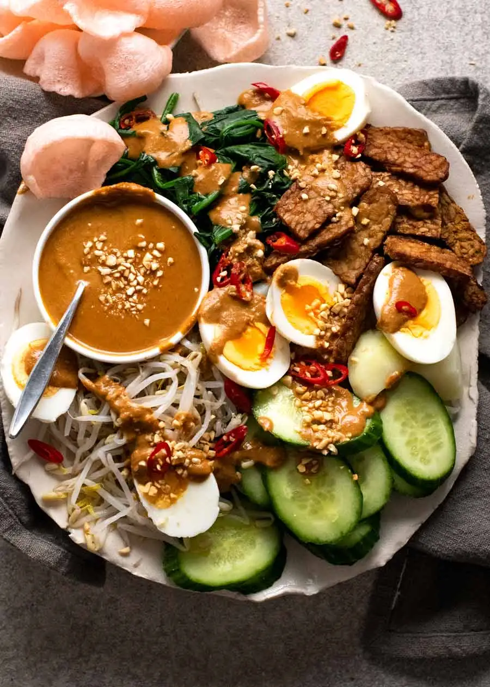

Gado Gado
Gado Gado – fun to say, delicious to eat, this traditional Indonesian salad is probably the only recipe where you can put the words “blanched vegetables” and “tasty” in the same sentence and really mean it. That Gado Gado peanut sauce is a miracle worker!
A Bali food favourite, it’s healthy and endlessly versatile. Use ANY vegetables – raw or cooked!
- Prep: 15 mins
- Cook: 15 mins
- Main Course, Side Salad
- Bali, Indonesian
Ingredients
Gado Gado Sause
- 1/3 cup natural peanut butter, smooth or crunchy (your choice)
- 4 tsp red curry paste , store bought
- 3 tsp Kecap Manis (Indonesian sweet soy sauce)
- 1 tsp sambal oelak or other chilli paste (adjust spiciness to taste)
- 1/2 tsp salt
- 1 large garlic clove , pressed using garlic press (~ 3/4 tsp)
- 1 1/2 tbsp lime juice
- 1/2 cup coconut milk , full fat (Ayam brand best)
- 1/2 cup water
Salad
- 1 bunch spinach , roots trimmed
- 4 cups beansprouts
- 200g / 7 oz potato - small halved, large peeled chopped 2 cm / 1" cubes OR 1.5cm / 1/2" slices
- 1 cucumber , sliced on the diagonal ( or 1/2 long cucumber ie Telegraph/English)
- 2 - 3 boiled eggs , peeled and halved
- 15 prawn crackers , optional
Crispy Tempeh (or tofu):
- 2 tbsp vegetable or peanut oil
- 200g / 7 oz tempeh (or firm tofu)
Garnishes
- 1 tbsp finely chopped peanuts (highly recommended)
- Red chilli , finely sliced, optional (small = spicy, large = less spicy)
Instructions
Gado Gado Peanut Sauce:
- Mix all ingredients in a small saucepan over medium low heat. Bring to simmer then cook for 5 minutes, stirring regularly so the bottom doesn't catch, until it thickens. If too thick, just add more water - should be able to drizzle it (see video for thickness).
- Taste and adjust as follows: lime for more sour, salt, sugar for sweet.
- Cover and keep warm.
Blanched Vegetables:
- Bring a saucepan of water to the boil.
- Add potatoes and cook for 5 minutes or until cooked through. Use a slotted spoon to transfer to colander to drain.
- Cook beansprouts for 3 minutes or until just wilted. Transfer to colander, press out excess water.
- Add spinach, push under to submerge - will instantly wilt. Remove, transfer to colander, press out excess water.
Crispy tempeh or tofu:
- Slice into 0.75 x 5 cm / 1/3 x 2" slices (or thereabouts).
- Heat oil in a skillet over medium high heat. Cook tempeh 2 min on each side until deep golden and crispy. (Tofu ~ 1 1/2 min)
Assemble:
- Either make one platter for sharing, or individual. Vegetables and egg can be served warm or at room temp, sauce should be served warm (it thickens when cool).
- Place vegetables and tempeh on serving plate, top with egg.
- Pour sauce into serving bowl.
- Serve Gado Gado Salad with peanut sauce, peanuts for sprinkling, fresh chillies and prawn crackers on the side.
Nutrition Information:
- Calories: 572cal (29%)
- Carbohydrates: 48g (16%)
- Protein: 32g (64%)
- Fat: 33g (51%)
- Saturated Fat: 10g (63%)
- Iron: 9mg (50%)
- Vitamin A: 8232IU (165%)
- Cholesterol: 187mg (62%)
- Sodium: 502mg (22%)
- Potassium: 1796mg (51%)
- Fiber: 10g (42%)
- Sugar: 15g (17%)
- Vitamin C: 77mg (93%)
- Calcium: 243mg (24%)
Home